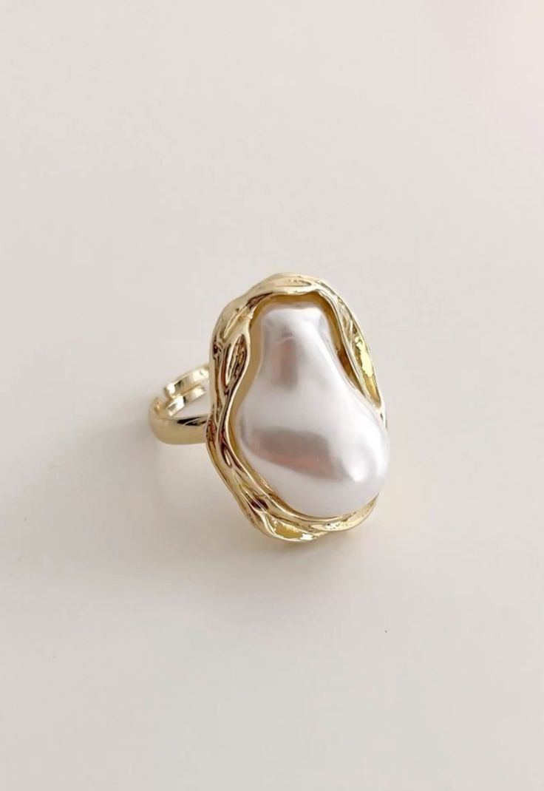

Founders
Metallic Fox was founded by a group of passionate individuals who share a common vision of creating unique, high-quality products that make a difference.
Learn more about Metallic Fox and our commitment to being inclusive, ethical and sustainable.
Metallic Fox was founded by a group of passionate individuals who share a common vision of creating unique, high-quality products that make a difference.
We began as a small team with a big dream: to create products that not only look great but also make a positive impact on the world.

We are committed to sustainability and ethical practices in all aspects of our business. In order to achieve this, we work with local suppliers and use eco-friendly materials whenever possible.